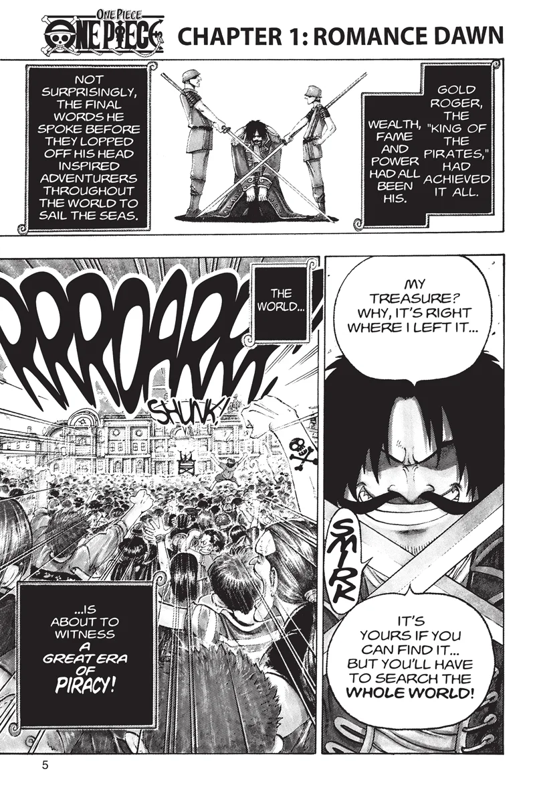
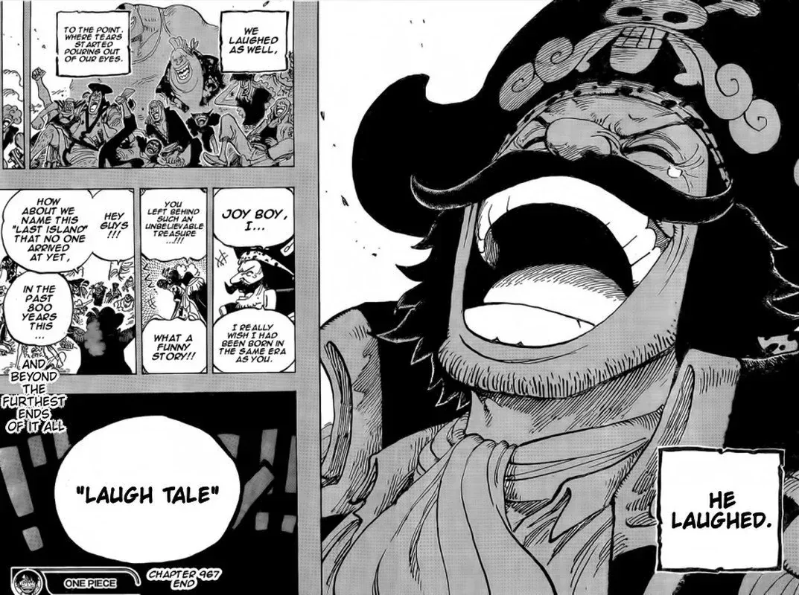

Wealth. Fame. Power.
One man had all of it: Gol D. Roger, the King of the Pirates.
On the scaffold, someone asked him where his treasure was.
“My treasure? If you want it, you can have it. Go and find it!”
The world set sail.
Goma's Grand Archive · Book of the Voyage
The Story of One Piece.
Chapter 1 to chapter 1191, arc by arc. Every saga, every island, every crewmate, and the pages and moments that stayed with me along the way.
Spoilers all the way to the latest chapter.
The whole route
1 to 1191, on one line.
Every arc sized by its chapters. Tap one to sail back to it.

Laugh Tale
Roger reached the end of the world and laughed.
Nobody else has been there since. The story is still being drawn, and I'm reading it as it happens: chapter 1191.
To be continued.
Four Road Poneglyphs lead to Laugh Tale. One of them is somewhere in this story. The other three are hidden in the archive.